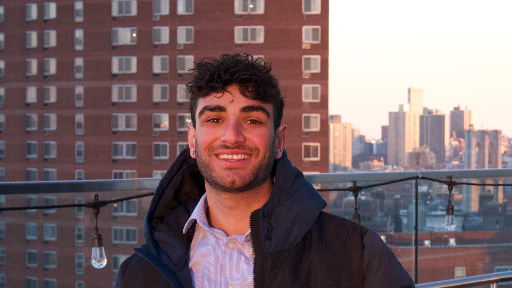
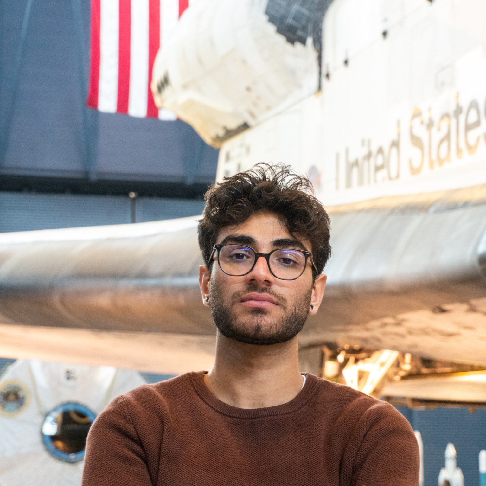
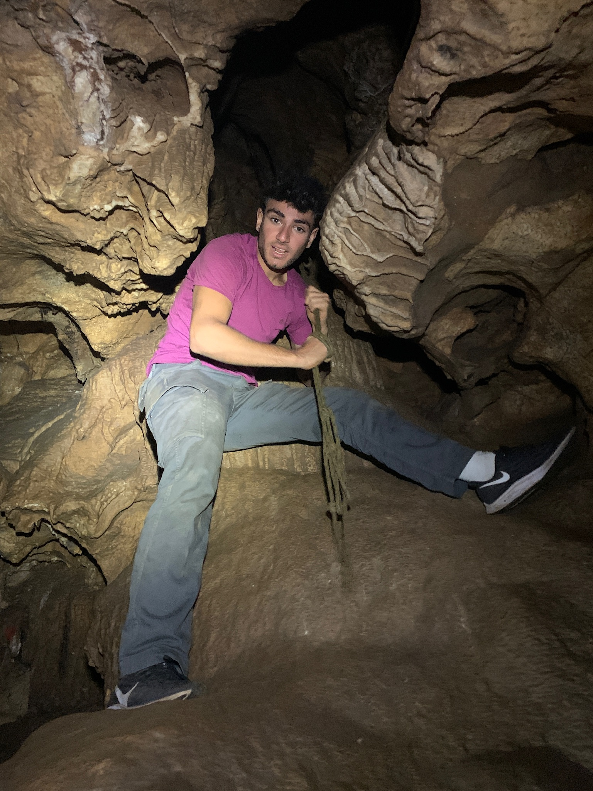
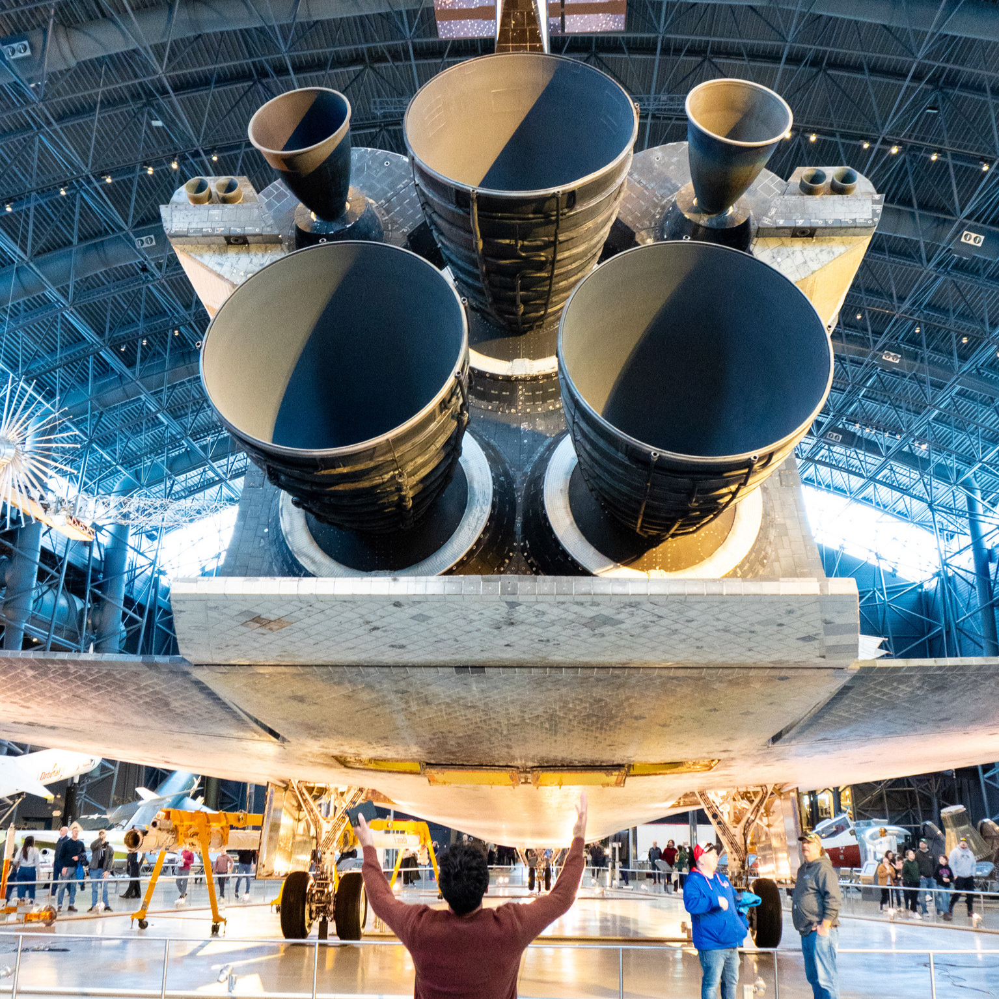
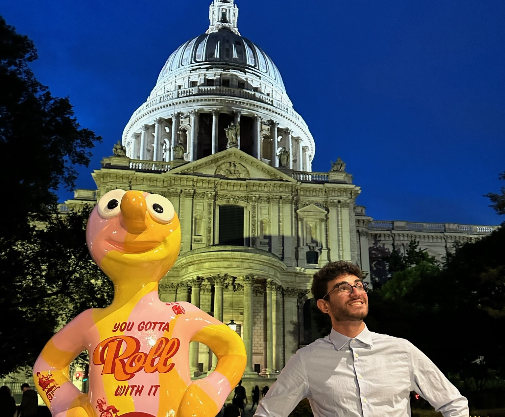
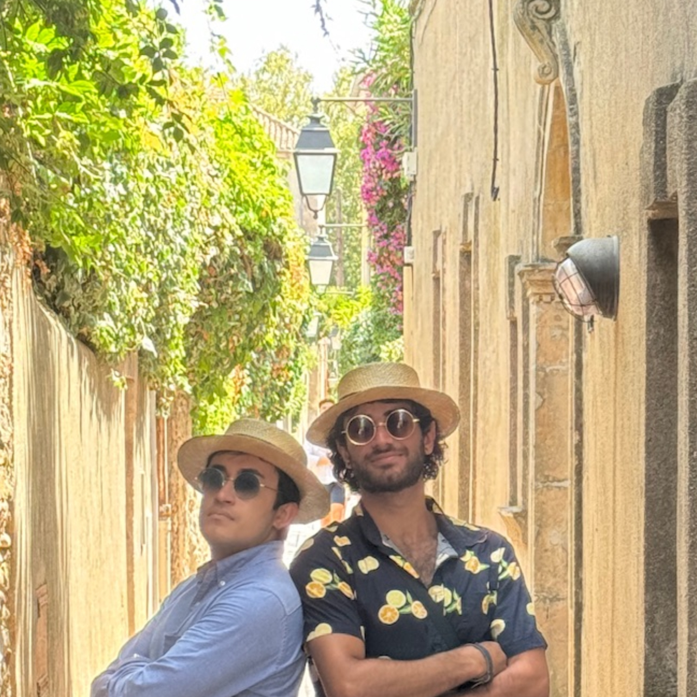

Phone : +1 (650) 720-8415
Email : danielghasemfar@gmail.com
LinkedIn : Click for LinkedIn
Resume : Click to Download
I am a Mechanical Engineer from Duke University, Class of 2024, with minors in Mathematics and Psychology, and a specialized focus on Aerospace Engineering. For the past two years, I have conducted research at the Duke General Robotics Lab, where I've worked on 3D wave propagation simulations and AI-driven robot control.
One of my most significant projects was my senior design endeavor, where I created and tested an electro-resistive thruster with a high specific impulse. However, the project that brought me the most joy was developing "Bucko," a two-legged robot capable of dancing and walking.



My primary interests lie in control theory, FEA modeling, robotics, and mechatronics. I am passionate about combining STEM with visual art, as evidenced by the projects showcased on this custom website.
In terms of technical skills, I am proficient in Python, Java, JavaScript, and MATLAB. I am also well-versed in Solidworks and Fusion CAD software, Maple and Mathematica CAS, and Eagle PCB design, with some experience in Ansys simulation.


I was born in Iran into a family of journalists. My childhood was spent in Prague, and I completed high school in the Bay Area. I am Fluent in Farsi and conversational in Spanish. Traveling and exploring new places are passions of mine. In my free time, I love to go backpacking, running, and hammocking. I'm also a big fan of electronic music.